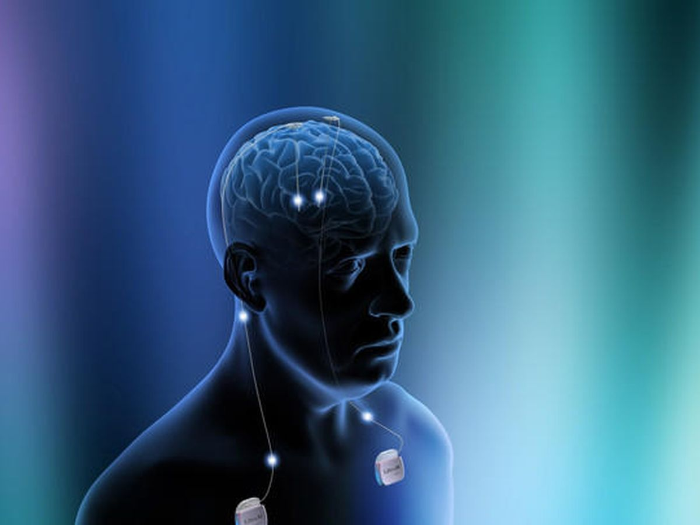

El microchip neurocognitivo es una innovadora tecnología diseñada para optimizar el aprendizaje y la eficiencia de la enseñanza basada en perfiles neurocognitivos individuales.
El microchip neurocognitivo utiliza algoritmos avanzados de procesamiento de datos para analizar el perfil neurocognitivo de cada individuo. Estos datos se utilizan para generar recomendaciones personalizadas de aprendizaje y para ajustar dinámicamente el contenido educativo.
Para obtener más información sobre nuestro microchip neurocognitivo, por favor contáctenos a través de:
Email: info@microchipneurocognitivo.com
Teléfono: +123456789